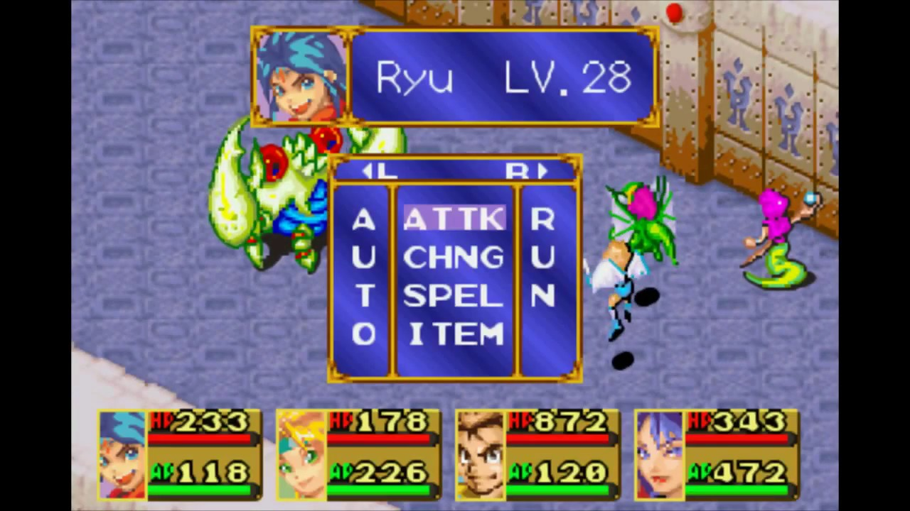

Breath of Fire I
Released in 1993 for the Super Nintendo, Breath of Fire 1 is the origin of this interesting franchise, and as such, ends up being the most archaic game, and overall not very worthwhile. Even still, this set the base for the subsequent games, and does have a few great ideas here and there, so it works well as a topic of study for understanding the franchise as a whole.
Gameplay
In battle, the gameplay is what you can typically expect from a JRPG, you can attack, defend, use items and spells, etc. You can use a maximum of 4 chars in a battle, and there are a few different mechanics, such as characters taking a mortal hit but rising up afterwards with a little hp, which is dependant on their "Will" stat.
The protagonist, Ryu, has a special power: as he is one of the dragonbrood, he can transform into a dragon during battles, and you can unlock his transformations throughout the game, by going after optional temples.
Besides him, another character worth highlighting is Karn, who aside from his thieving abilities, can fuse with several other characters, and you unlock his fusions by exploring the map and finding certain spells.
Where the game really differs is in the world map, however. Most playable characters have a different overworld ability, such as Ox who can move heavy objects, and Bo who can move through forests. Besides that, there are also two minigames that give you different items:
- a Hunting Minigame, where you can hunt animals for food and either consume it for healing or sell it for money
- a Fishing Minigame, where you can catch fish and...do the exact same thing with it
There is also a night and day system, where time passes naturally but you can also use one of Ryu's spells to fast forward it. This is necessary for very specific sections in the game, but other than that, it just works as a cool visual detail.
Story
A goddess named Tyr offers to grant any wish to whichever of two dragon clans, the Light Dragons and the Dark Dragons, bests the other, therefore stirring a war between them on purpose. The war ended when the goddess was imprisoned by a Light Dragon and his companions.
Thousands of years later, the Dark Dragons are after the other clan. The protagonist, Ryu, is a member of the Light Dragons, and the game starts with your village being attacked by the Dark Dragons, and your clan not being able to fight against them, since they have sealed their powers. However, Ryu's sister can use powerful magic, and goes against one of the Dark Dragons commanders, and manages to lure them away, but is kidnapped in the process.
Zog, the villain of the game and leader of the Dark Dragons, announces that his clan will dominate the world, and seeks to find the keys that will be able to unseal Tyr, and this is where Ryu sets out on a journey to find the keys before him, and save the world.
After Ryu meets several companions but fails to get the keys, Zog is able to ressurect Tyr, but Ryu manages to defeat both of them in the end, repeating the story that happened milleniums ago, but ending the cycle for good.
Fusions and Dragon Forms
Here follows a list of Karn's fusions:
- Shin - Gobi and Bo | High HP, Speed And Strength, but low Defense.
- Deebo - Gobi and Ox | High Speed and Strength, but can only be used Underwater.
- Doof - Bo and Ox | High Strength and HP growth.
- Puka - Bo, Ox and Gobi | Highest Speed, Strength and HP of the forms, and a unique ability, "Roar", that opens special doors in the overworld.
Here follows a list of Ryu's dragon forms:
- Snow Drake(SnoDr), Flame Drake(FlmDr), and Thunder Drake(ThrDr) - Deal Ice, Fire, and Thunder damage respectively. The weakest forms.
- Ice Dragon(IceDgn), Fire Dragon(FirDgn), Bolt Dragon(BltDgn), and Gold Dragon(GldDgn) - Deal Ice, Fire, Thunder and Holy damage respectively. Gold Dragon damages all enemies, but only affects the undead.
- Rudra - Damages all enemies, however you obtain the final form right afterwards, making Rudra worthless.
- Agni - Technically a Fusion Spell(like Karn's), it fuses all characters together and transforms Ryu into the most powerful dragon, that can damage all enemies by a fixed 999 damage, and also greatly increases Ryu's max HP while using it.